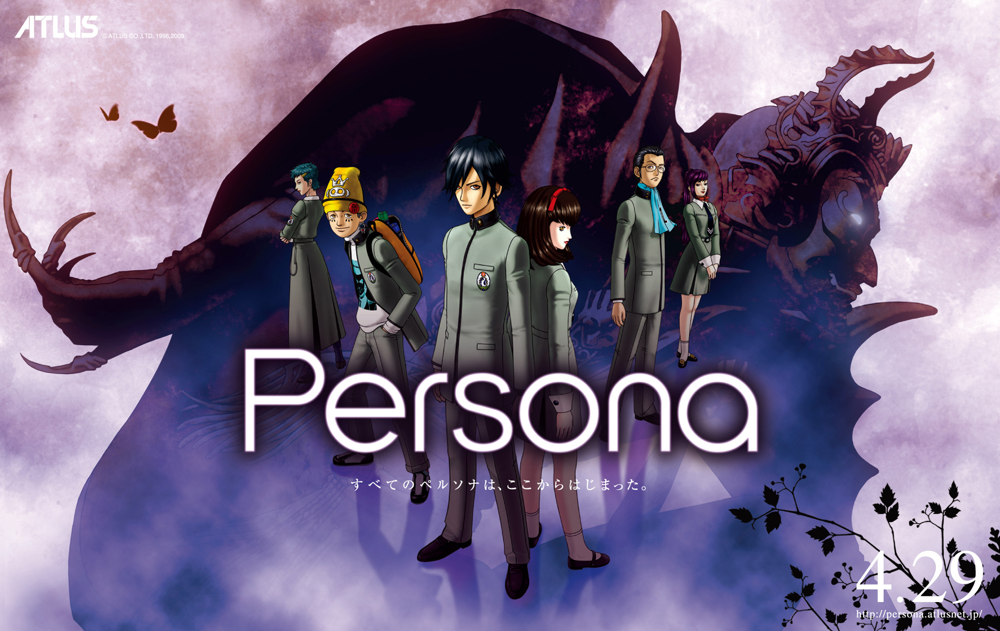

Home Page
Website Purpose
This website has been created to inform readers of a video game series that I am a very big fan of: Megami Tensei. It is a Japanese game series by the company ATLUS (owned by SEGA) that was niche for Western audiences for a long time. This website will inform you all what the series is, what the gameplay is like, and what some of the recently released games are like in order to help you all get a grasp of whether or not you would like to play this series or not, as this is mainly geared towards people who are unfamiliar with this game. I will also be reviewing 3 games that were released within the last few years: Shin Megami Tensei V, Persona 5 Royal, and Soul Hackers 2. I will try to be as honest and direct as possible with my reviews, since sometimes the fanbase can make biased reviews about specific games of this series.
What Megami Tensei Is

Megami Tensei is a series of Japanese role playing games. It began as a trio of books, the first one released in 1984, and the game Digital Devil Story: Megami Tensei (which was based on the books) was released in 1987 for the Famicom. The series is commonly referred to as "Megaten" by the fanbase, but is also commonly known as "Shin Megami Tensei", since most of the mainline games include "Shin" in the title. The games take place in Japan, usually in Tokyo, and usually in a post-apocalyptic setting. Most of the games have standalone stories, meaning you can pick up almost any Megaten game and start playing it since its story has little to do with any other game in the series. Usually the story consists of a group of heroes that fight against forces that stand against humanity, such as demons, angels, and evil humans. You, the player, are usually allowed to choose your moral alignment- law, neutral, or chaos- through your choices, actions, and who you support in game. Most of the games have are rated M for Mature for reasons such as blood, language, and sexual references- but honestly, the games are pretty tame for rated M games. The blood, foul language, and sexual references are light and sparse- I've seen rated T games worse than Megaten games. But, to each their own in terms of how strict they are with content.
Now, there are multiple spinoff series. Shin Megami Tensei is the main series, but there's a number of spinoffs such as Digital Devil Saga, Devil Survivor, and the famous Persona series. They all have their own unique aspects and gameplay mechanics (some of which will be discussed on other pages of this website), but they are all of the same franchise, which means a lot of the same concepts, a lot of the same combat mechanics, and many of the same demons.
What Demons Are (in this series)
Now, demons in this game series refers to any supernatural entity that is capable of interferring with human life. Demons take on the form of entities from a lot of mythologies on earth. There's powerful Japanese gods such as Izanagi, awesome youkai such as Ippon-Datara, Chinese entities such as Feng Huang, American cryptids like the elusive Mothman, Native American beasts like the Thunderbird, Egyptian, Greek, and Roman gods and monsters (hope you like the Minotaur), undead Matadores, Nordic gods (Marvel fans rejoice), English folklore myths like Silky, Celtic legends such as Cu Chulainn, and there's even figures from the Bible. Recognize the Legion and Melchezidek? The game series is very respectful towards all referenced belief systems. While angels consider themselves as aligned with God and opposed to demons, they are still demons by definition.
Demons can be summoned through supernatural means, but usually humans are given the power to summon them using what is known as the Demon Summoning Program, created by the main character of the first Megami Tensei game. It can be downloaded on many types of technology, and a device that can summon demons is known as a COMP. There have been many types of COMPS throughout the series- people have been able to summon demons using smartphones, arm gauntlets, guns, even Nintendo DS-looking objects. People who can summon demons and fight alongside them are known as summoners. Summoners can negotiate with demons they encounter to try to recruit them, and summoners can also fuse demons together to summon new demons. As long as the summoner is strong enough, demons will obey their summoners. But for the most part, demons run free and rampant in most of the Megaten games.
Combat Mechanics
Almost every Megaten game has turn-based combat gameplay. Since Pokémon is more popular, it is easy to compare this gameplay to Pokémon. Enemies are encountered through random encounters- as you explore the various areas and dungeons you may enter battle. Battles are like Pokémon battles, except each side usually has up to 4 combatants, and the main character fights alongside their demons. Demons, like Pokémon, are magical creatures that can be strengthened as they participate in battles. If you don't know how Pokémon or old Final Fantasy games work, during your turn you get to choose an action from a list of actions, and you have attacks you can use on your opponents. Each side is trying to reduce all of the hit points (or health) of the opponents to zero. Summoners and demons have access to physical attacks and magic attacks. Magic attacks include elemental magic (like fire, ice, wind, etc.), healing magic, magic that raises or lowers stats (like attack and defense), and status problem inflicting magic (like putting the enemies to sleep or poisoning them). Exact combat mechanics and gimmicks can differ based on the game or spinoff series, but the broad mechanics stay the same across the board. In mainline games, you are also able to choose to speak to a demon instead of attacking it. This initiates "Demon Negotiation", where you are given various response options to things or questions the demon may say/ask/do. You must think about the personality of the demon you are speaking with. Answer well, and they may join you or give you items. Anger or bore them, and they may leave- or immediately attack.